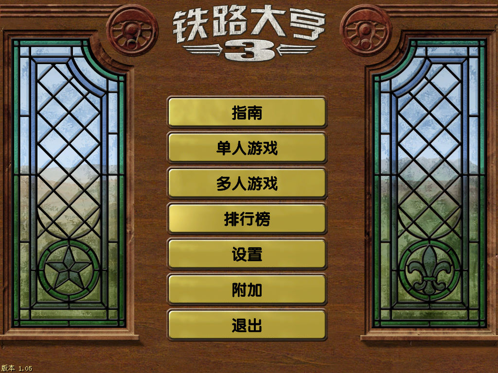
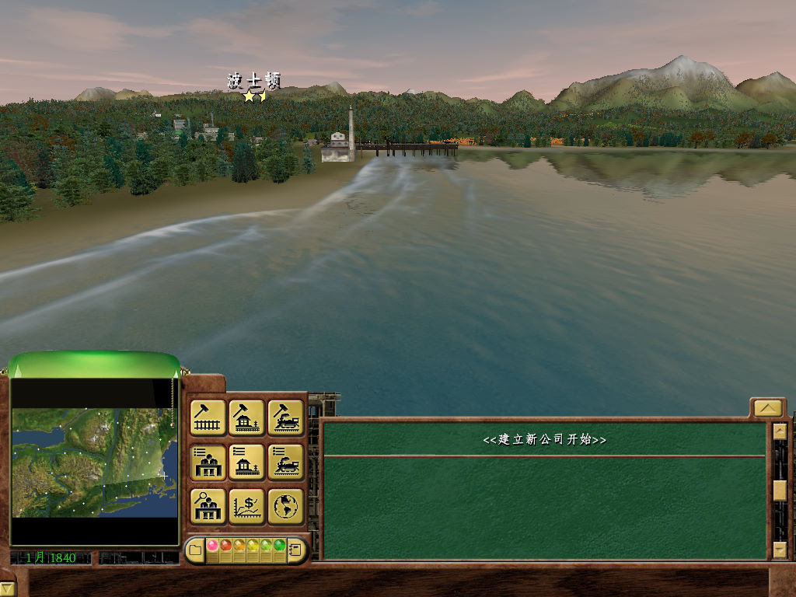
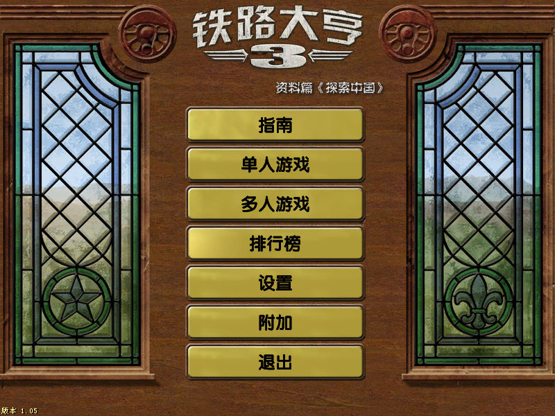
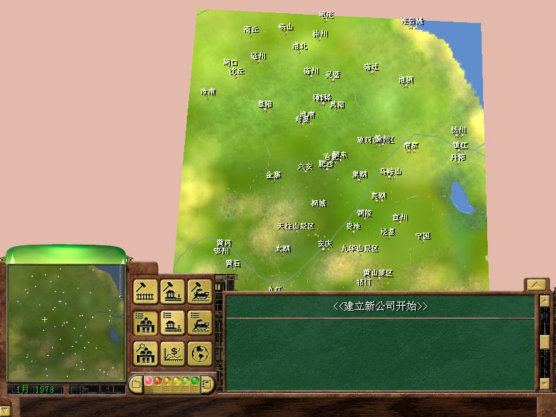

名稱：鐵路大亨3／鐵路運輸大亨3 (Railroad Tycoon 3，簡中／英文版)
簡介：PopTop 2003年出品的鐵路建造經營管理模擬遊戲，由Gathering代理發行，之後再推
出免費擴充包「海岸到海岸（Coast to Coast）」。2004年由索奥爾推出「探索中國」
簡中版獨立資料片 [待補]。




保護：英文版為光碟SecuROM 4.85，簡中版為光碟SecuROM 5.00，資料片無保護
備註：簡中版安裝完為1.03版
檔案：rt3_coast_to_coast_eng.rar = 英文「海岸到海岸」擴充包（1.04更新檔）
RT3_105_eng.rar = 英文1.05更新檔（需先更新至1.04）
rt3105_chs.rar = 簡中1.05更新檔（含主程式與資料片，已去除保護）
crack104.rar = 英文1.04破解檔
crack105.rar = 英文1.05破解檔